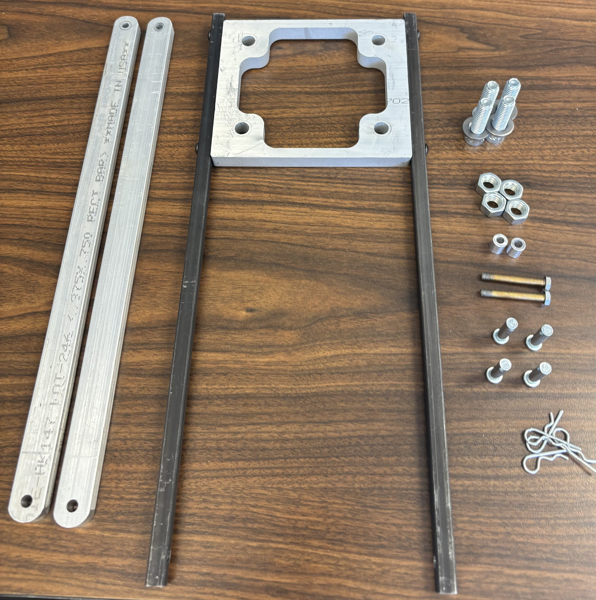
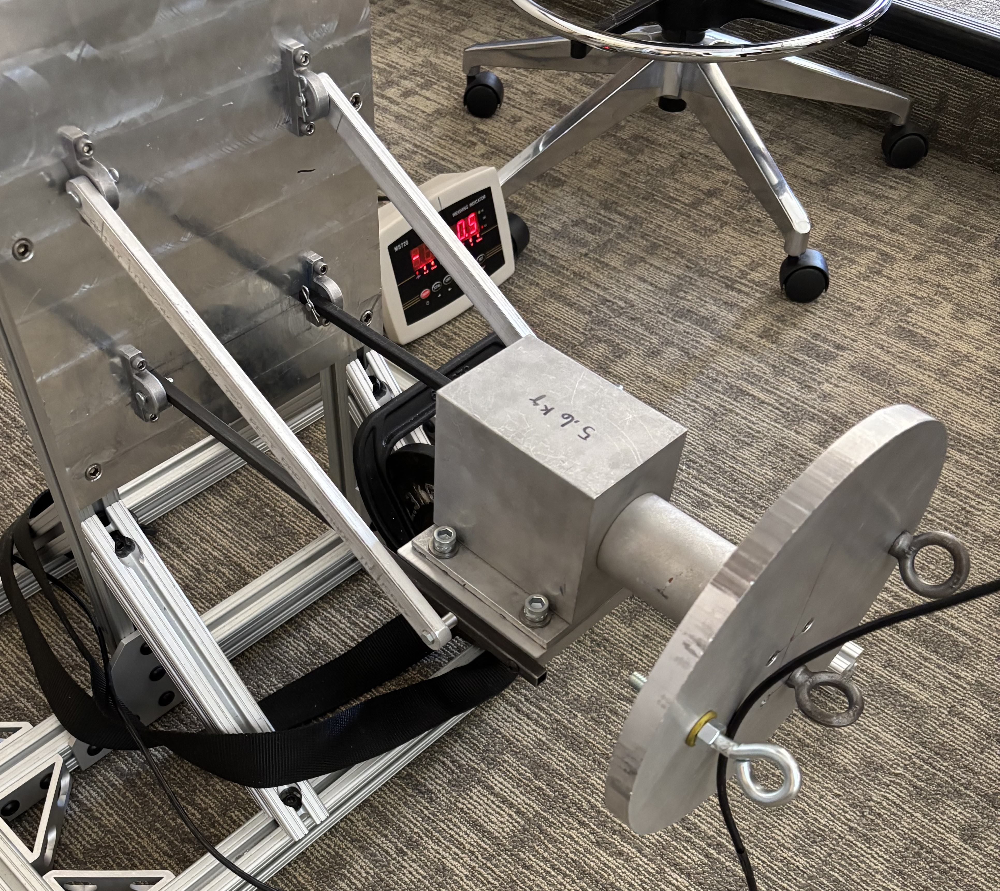

Pump Support Structure
Designed, analyzed, and fabricated a structural support frame for a belt-driven centrifugal pump. Symbolic stress and deflection analysis, material selection, and FEA guided the design before physical testing.
Testing also highlighted the effects of pin-joint compliance and the differences between idealized analytical models, FEA, and real-world structural behavior.
0.82 kg
final mass
$109
build cost
20.6 kg
maximum test load
Read the full project report →